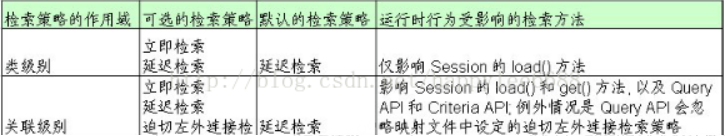
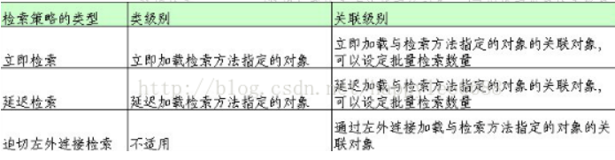

Hibernate的Session在加载Java对象时，一般都会把这个对象相关联的其他Java对象也都加载到缓存中，以方便程序的调用。但很多情况下，我们不需要加载太多无用的对象到缓存中，一来会占用大量的内存，二来会增加数据库的访问次数，使得程序的运行效率降低。为了合理的使用缓存，Hibernate提供了不同的检索策略来解决这些问题。
作用域
在说检索策略之前，先了解一下检索策略的作用域，它分为：类级别和关联级别。类级别的作用域在检索数据时，检索的数据只包含一个类对象，不涉及与该类关联的其他对象。关联级别的作用域检索的数据包含相关联的多个类的对象，例如，Customer对象与Orders对象存在关系，检索到一个Customer对象后，还会涉及与之关联的Orders对象。

检索策略
Hibernate的检索策略分为三种，立即检索、延迟检索、左外连接检索。
立即检索
采用立即检索策略，会把被检索的对象，以及和这个对象关联的一对多对象都加载到缓存中。Session的get方法就使用的立即检索策略。这种策略的优点在于，频繁使用的对象会被加载到缓存中，程序调用很方便，也很及时。缺点就是，占用的内存过多，而且数据库访问的次数也会很频繁，效率低下。
延迟检索
采用延迟检索策略，就不会加载关联对象的内容。直到第一次调用关联对象时，才去加载关联对象。在不涉及关联类操作时，延迟检索策略只适用于Session的load方法。涉及关联类操作时，延迟检索策略也能够适用于get，list等操作。
在类级别操作时， 延迟检索策略，只加载类的OID不加载类的其他属性，只用当第一次访问其他属性时，才回访问数据库去加载内容。（这里使用了CGLIB生成了类的代理类）
在关联级别操作时，延迟检索策略，只加载类本身，不加载关联类，直到第一次调用关联对象时，才去加载关联对象。
程序模式都是用延迟加载策略。如果需要指定使用延迟加载策略。在配置文件中设置<class>的lazy=true，、<set>的lazy=true或extra（增强延迟）<many-to-one>的lazy=proxy和no-proxy。
这种策略的优点在于，由程序决定加载哪些类和内容，而不必全部都加载，避免了内存的大量占用和数据库的频繁访问。缺点就是在Session关闭后，就不能访问关联类对象了。 需要确保Session一直处于打开状态，调用关联对象，最后在关闭Session对象。
左外连接检索
采用左外连接检索，能够使用sql的外连接查询，将需要加载的关联对象加载在缓存中。<set>fetch设置为join，<many-to-one>的fetch设置为join。
这种策略的优点在于，对应用程序完全透明，不管对象处于持久化状态，还是游离状态，应用程序都可以方便的从一个对象导航到与它关联的对象。使用了外连接，select语句数目少。缺点就是可能会加载应用程序不需要访问的对象，白白浪费许多内存空间。复杂的数据库表连接也会影响检索性能。

检索方式
Hibernate提供的检索方式为5种，分为导航对象图检索方式、OID检索方式、HQL检索方式、QBC检索方式、本地SQL检索方式。
导航对象图检索方式
利用类与类之间的关系来检索对象。譬如我们要查找一份订单，就可以由订单对象自动导航找到订单所属的客户对象。当然，前提是必须在对象-关系映射文件上配置了它们的多对一的关系。
OID检索方式
主要指用Session的get()和load()方法加载某条记录对应的对象。
HQL检索方式
HQL（Hibernate Query Language）是面向对象的查询语言，它和SQL查询语言有些相似。在Hibernate提供的各种检索方式中，HQL是使用最广的一种检索方式。它具有以下功能：
在查询语句中设定各种查询条件。
支持投影查询，即仅检索出对象的部分属性。
支持分页查询。
支持分组查询，允许使用group by和having关键字。
提供内置聚集函数，如sum()、min()和max()。
能够调用用户定义的SQL函数。
支持子查询，即嵌套查询。
支持动态绑定参数。
Session类的Qurey接口支持HQL检索方式，它提供了以上列出的各种查询功能。
注:Qurey接口支持方法链编程风格，它的set方法都返回自身实例，而不是返回void类型。方法链编程风格能使程序代码更加简洁。
例：
检索USER 表的所有记录
—-HQL语句中关键字大小写无关，但习惯将关键字小写。
—-from 关键字后面是类名不是数据库表名，类名需区分大小写。
1 | Query query = session.createQuery("from User"); |
等价于：
1 | String hql = "select u from User u"; |
where 子句
—where子句中给出的是类的属性名而不是数据库表字段名，其中属性名必须区分大小写。
1 | String hql = "from User where userName='张三'"; |
HQL支持的各种运算符
| 程序中指定的连接类型 | HQL**运算符** |
|---|---|
| 比较运算符 | =、<>、>=、<=、>、<、is null、is not null |
| 范围运算符 | in、not in、between…and、not between…and |
| 字符串模式匹配运算符 | like |
| 逻辑运算符 | and、or、not |
HQL检索单个对象
list()：返回List类型的查询结果，返回所有满足条件的对象。
uniqueResult()：返回单个对象。
1 | Query query = session.createQuery("from User u |
HQL参数绑定
在HQL查询语句中按照参数位置绑定参数
1 | String hql = "from User u where u.userName=?"; |
在HQL查询语句中按参数名称绑定参数。
1 | String hql = "from User u |
HQL的绑定参数方法
setParamter() 绑定任意类型的参数。
setProperties(Object bean) 用于把命名参数与一个对象的属性值绑定，并且参数名称要与对象属性名称一致。
setProperties(Map bean)用于把命名参数与一个Map类型的对象的value值绑定，并且参数名称要与Map类型的对象的key值一致。
HQL实体更新
不使用HQL的实体更新。
1 | Transaction tx = session.beginTransaction(); |
HQL实现实体更新的方式
1 | Transaction tx = session.beginTransaction(); |
HQL实体删除
1 | Transaction tx = session.beginTransaction(); |
HQL子查询
HQL支持在 where 子句中嵌入子查询语句，并且子查询语句必须放在括号内。
查询订单数量大于0的所有用户：
1 | select * from user u |
如果HQL子查询的是集合，HQL提供了一组操作集合的函数:
size()，获得集合中元素的个数；
maxIndex()，对于建立索引的集合，获得最大索引值；
minIndex()，对于建立索引的集合，获得最小索引值；
elements()，获得集合中所有元素。
QBC检索方式
采用HQL检索方式时，在应用程序中需要定义基于字符串形式的HQL查询语句。QBC API提供了检索对象的另一种方式，它主要由Criteria接口、Criterion接口和Expression类组成，它支持在运行时动态生成查询语句。
检索姓名为张三 的所有用户
1 | Criteria criteria=session.createCriteria(User.class); |
| 运算类型 | 方法 | 描述 |
|---|---|---|
| 范围运算符 | Restrictions.in | 等于列表中的某个值 |
| Restrictions.not(Restrictions.in) | 不等于列表中的任意值 | |
| Restrictions.between | 大于等于值1小于等于值2 | |
| 字符串模糊匹配 | Restrictions.like | 字符串模糊匹配 like |
| 逻辑运算符 | Restrictions.and | 逻辑与 |
| Restrictions.or | 逻辑或 | |
| Restrictions.not | 逻辑非 | |
| 比较运算符 | Restrictions.eq | 等于 |
| Restrictions.ne | 不等于 | |
| Restrictions.gt | 大于 | |
| Restrictions.ge | 大于等于 | |
| Restrictions.lt | 小于 | |
| Restrictions.le | 小于等于 | |
| Restrictions.isNull | 等于空值 | |
| Restrictions.isNotNull | 非空值 |
本地SQL检索方式
采用HQL或QBC检索方式时，Hibernate生成标准的SQL查询语句，使用于所有的数据库平台，因此这两种检索方式都是跨平台的。有的应用程序可能需要根据底层数据库的SQL方言，来生成一些特殊的查询语句。在这种情况下，可以利用Hibernate提供的SQL检索方式。
查询所有的用户信息：
1 | String sql = "select * from user"; |